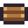
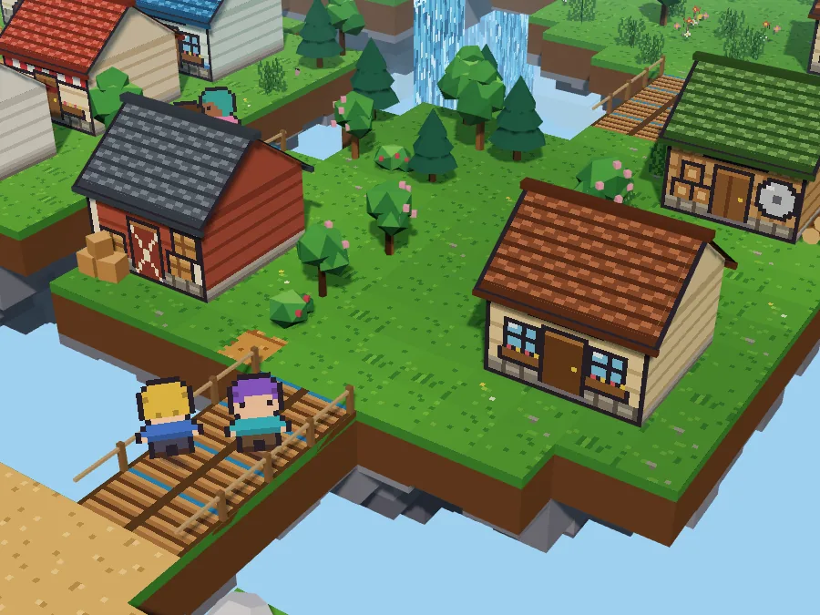
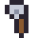
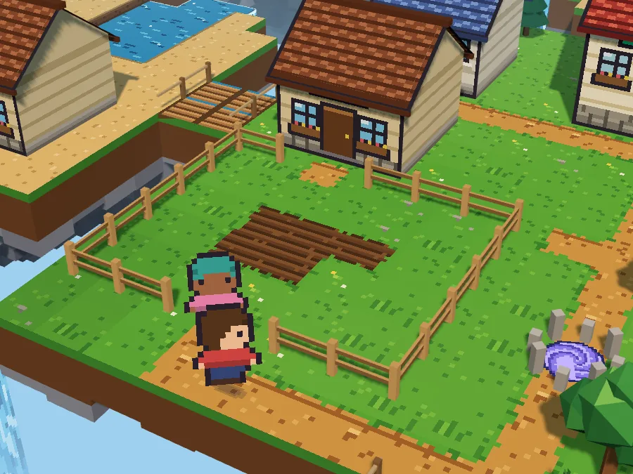
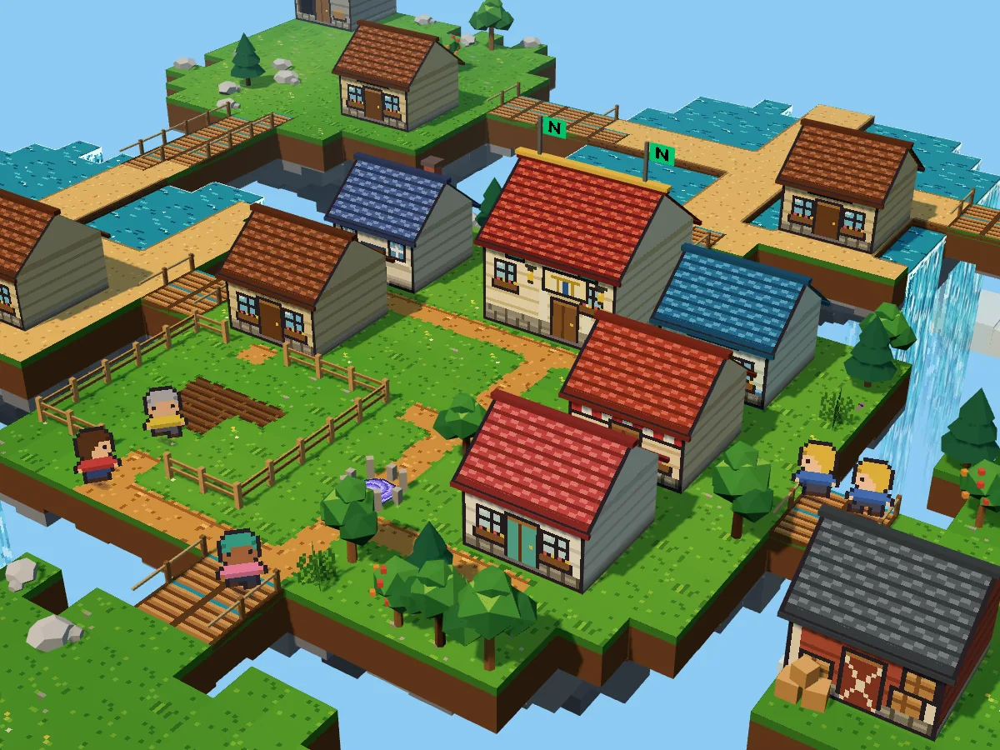
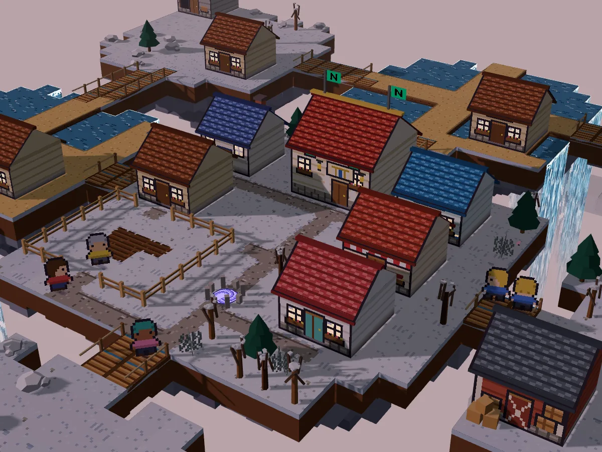
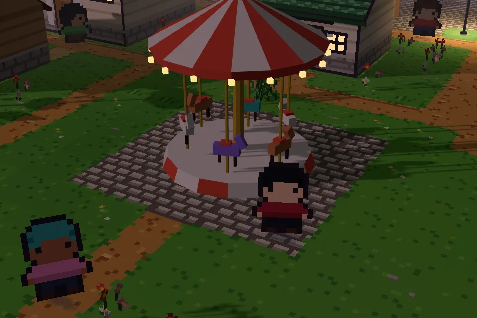
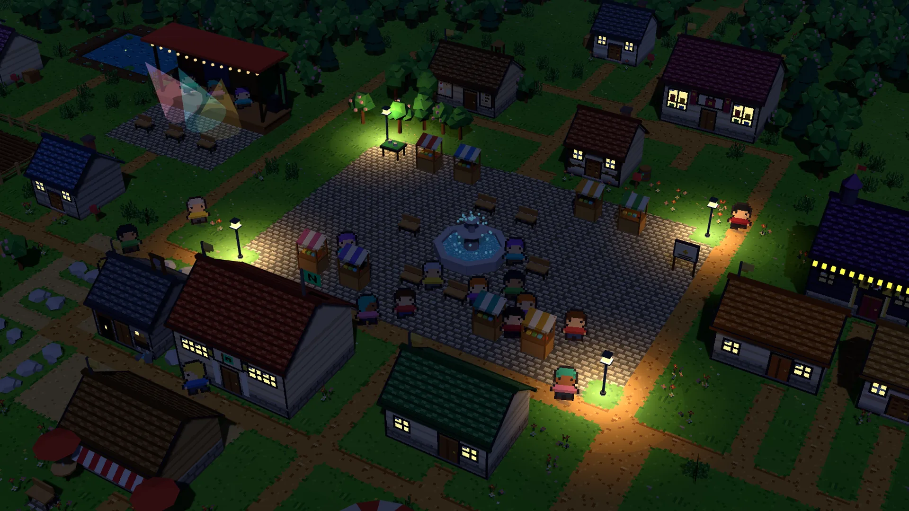

One game day lasts 24 real minutes
A market town in the sky,
where prices move
when people play.
Fish, farm, chop and craft on your own floating islands, then sell to four shopkeepers whose prices follow their stock. Free in your browser, with Google sign in.
 Right now Sarah pays 7 coin for a fish
Right now Sarah pays 7 coin for a fish
Drag to turn, or press Q ESwipe to turn
How it works
Gather on your islands. Craft it up. Sell it in town.
That is the whole loop, and it never asks for coin to start. Gathering costs energy, and a meal brings it back. What you bring home sells raw, or crafts into something worth more.
-
 01Fish
01FishCast where the water ripples
Wait for the bite, press in time, then hold the fish inside the green zone until the catch bar fills. Sell it raw, or grill it over a piece of wood.
 Fish 8
Fish 8
Wood 6 Grilled fish 20
Grilled fish 20
-

02Chop and mineChop wood, mine ore, make a pickaxe
Swing at trees and rock. Felled trees regrow from a stump. Tools wear down as you work, and Ben sells new ones or repairs yours.
 2 Ore 12
2 Ore 12- Wood 6

Pickaxe 45
-

03FarmGrow wheat on fifteen plots
Hoe the soil, plant, water and harvest. Wheat will not grow in winter, so plan ahead. Wendy buys it and bakes it into bread.
 2 Wheat 5
2 Wheat 5 Bread 16
Bread 16
Coin values are the middle prices across the four shops, live from the game server when it answers. Twelve starter missions walk you from your first chopped log to your first sale.
You gather it. Someone buys it. The whole town feels it.
Every coin a shop pays out comes from goods somebody brought in. When fishers flood the market, fish gets cheap. When nobody chops, wood climbs.
The market
Four shopkeepers.
Prices follow the shelf.
Each shop has its own stock, its own cash and its own mood. A full shelf means a low price. An empty one means they pay you well. Pick a shop to see its shelf right now.
Sarah’s Fish Stall
Buys fish and wood. Sells fish and grilled fish.
| Good | Stock | You buy | You sell |
|---|
Base prices from the game’s economy file, until the game server answers.
SarahSarah’s Fish Stall
at her stall
- What’s fish worth today?
- Fresh fish is 9 coin today. I keep about 20 on ice, so it’s a fair day to buy.
Stock and demand set the price
A price moves at most 10% in a game hour and stays between a quarter and four times its base. Each move comes with a one line reason in the shop window.
Sell to players too
List goods at your own price on the player market. The shopkeepers shop there as well, buying listings at or below their fair price.
Coin that stays worth something
New coin only enters when a shop buys your goods. Fees, food, tool repairs and a 5% burn on every player sale take it back out.
Your Homeland
Nine islands in the sky.
All of them yours.
Every player gets a Homeland above the town. It starts with your house, a Town Hall and a farm. Open the next island and a plank bridge lays itself across the gap.

Town Hall
Level it up to open islands and new buildings, and it grows a new look up to level 3. Hire workers here: a farmer grows crops faster, a woodcutter gets more from each tree, a cook keeps everyone fed.
Farm
Fifteen plots beside your house. Two wheat bake one loaf.
Forest and work buildings
A sawmill turns out wood and a windmill turns out wheat while you are away, until the storehouse is full. Come back and collect.
- Sawmill
- Windmill
- Storehouse, 3 levels
Plank bridges
Each island you open joins the rest with a bridge. Later, street lights line the paths and glow at night.
Your house
Walk in and Mom is home. Lie down in bed for a nap: the camera comes in close, a lullaby plays and you get back 30 energy a minute while you stay in bed.
Better with friends
Bring up to three friends home.
A party holds four. Party mates get green name tags, a private chat and a dot on your map. You choose what each one can do in your Homeland.
Visitor
Walks, chats and eats at your place.
Helper
Chops, mines, fishes, farms and fights the night monsters. They keep what they gather, within a daily share.
Builder
Starts buildings for you from their own bag. A helper can press Help the builder to cut 15 seconds off a job.
Trade
Up to 3 kinds of goods plus coinFish4Bread2A living world
One clock and one calendar for every player.
A game hour lasts one real minute, so a day takes 24. The server keeps the time, so night falls on every island at once, and each season lasts seven game days.




Every game day has one weather for everyone. Showers in spring, bright sun through summer, rain in autumn and snow through winter. Rain waters every planted plot by itself, so a wet week saves you energy on the farm.
A day in town
24 real minutes- 06:00, the daily save
Yesterday’s gathering, crafting and shop trades are written to NEAR in one batch.
- 19:00 to 01:00, concert
A band plays the town’s chiptune on the stage by the fountain. It gets louder as you walk closer.
- 19:00 to 06:00, monsters
Wild boars and mine bats roam the forest and rock. Beat them for wood and ore.

Ride the carousel
The square has a fountain, benches you can sit on, a lily pond with frogs and a carousel.

Steer the public boat
Board at a landing and sail it yourself to the island no path reaches.

Evenings on the square
Lamps come on, windows glow and gentle music plays. Footsteps, rain and every chop and catch have their own sound.
Around town
A whole town to walk into.
Take the portal down from your Homeland and the public village is shared by every player. Almost every building has a room inside, and each one has a sign over its door.
Genesis Mall
28 outfits, hats and capes in seven slots, from 20 to 400 coin. Everyone sees what you wear. Work gloves, boots and a hard hat also make your workers faster.
Leaderboard and News Hall
The board at the edge of the square lists the best traders today and of all time. The News Hall carries the town’s latest news.
Public Mine
A mine beside a public forest and rock field, so new players can gather from day one before their own islands open up.
Ben’s tool shop
Your pickaxe, axe, fishing rod and hoe wear down with use. Buy a new one or pay Ben to repair it, priced by the wear.
Genesis Casino
A pass lets you in for 30 minutes to the Luck Table, slots, dice and cards. Chips are bought with coin, and anything you win is chips and titles that never turn back into coin.
Twelve house styles
The village Town Hall, the Post Office, the Coffee Shop and the Broker’s Office stand among houses in twelve styles, with medieval touches around the square.
Little things you will notice
- Click any player for their card: look, Town Hall level, and buttons to message or trade. Traded goods fly across between you.
- Hold Tab to see who is in your world, with their party and a connection signal.
- Twelve missions sit behind a button at the top, with a mark when a reward is waiting.
- Search the grass and it rustles. Sometimes a wheat seed pops out to plant.
- Every action has a sound, from chopping and fishing to doors and trades, with soft music by day.
- Chat with the town, send a private line with /msg, or talk only to your party with /p.
Ownership
Your goods are really yours.
No wallet needed to play.
Coin and items are recorded on NEAR, a public blockchain, so anyone can check who owns what. You never touch the crypto part unless you want to.
Sign in with Google
No seed phrase, no wallet popup, no fees. The game pays the network costs for you.
Saved once a game day
Everyday play is added up and written at 06:00 with a fingerprint of the whole day’s ledger. Player market sales and gifts are written right away.
A test network for now
Genesis Town runs on NEAR testnet. Coin and items have no cash value, so play for the town, not for profit.
Questions
Before you move in
Does it cost anything?
No. Genesis Town is free in your browser. It runs on NEAR testnet, a test network, so coin and items have no cash value.
Do I need a crypto wallet?
No. Sign in with Google. The game pays the network fees, and you never see a seed phrase or a wallet popup.
What do I start with?
100 coin, 3 loaves of bread, 3 wheat and your tools. Pick your look on the character screen and you land in your own Homeland, with a portal down to the market town.
Can I look around before signing in?
Yes. Open the game and you can walk the public village as a guest and see the players there. Guests cannot chat or trade, and a few can visit at once.
Can I play with friends?
Yes. A party holds up to four players. Give friends a role in your Homeland so they can visit, help you gather and farm, or build with you, and swap goods face to face in a trade window.
Why do prices change?
Each shop prices from its stock, recent demand and its cash. A price moves at most 10% per game hour and stays between a quarter and four times its base. The player market also nudges what shopkeepers pay.
Does it run on my phone?
Yes, in a current browser, held upright or sideways, with thumb controls. A 2D view is one switch away in Settings for older devices.
What language is the game in?
English by default. Bahasa Indonesia is one click away in Settings, and the shopkeepers answer in your language.
Your islands are waiting.
Nothing to install and no wallet to set up. Sign in with Google and start with:
- 100 coin
- 3 bread
- 3 wheat